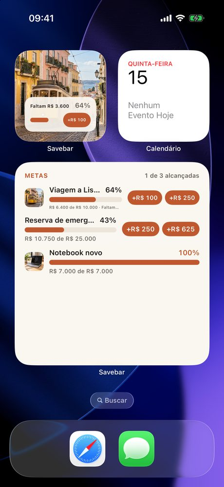
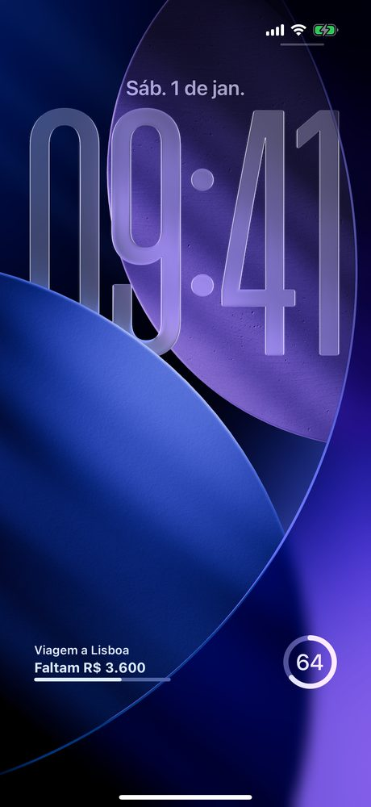
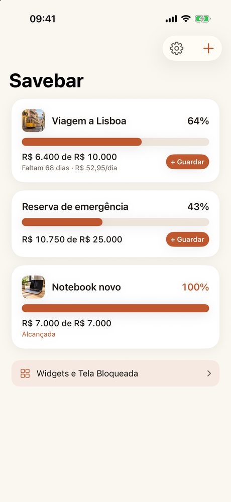

Toque em + no widget quando separar um dinheiro. Defina uma data para ver quanto guardar por dia.

Separe um dinheiro, toque em um valor como +R$ 50 no widget e veja a barra andar.
O que você quer conquistar, na Tela de Início. O widget pequeno é grátis: uma meta, a barra de progresso e um botão que guarda o valor definido sem abrir o app.

Veja sua meta chegar mais perto a cada dia.Pro Widgets da Tela Bloqueada: um anel com a sua porcentagem, quanto falta e uma visualização em uma linha.
Guarde para uma meta direto do pulso.Pro Os mesmos botões de valor do widget, além de complicações para o mostrador.
Adicione uma foto do que você quer conquistar: o widget pequeno mostra em tamanho grande. Salve algo de uma página de loja no Safari, ou pelo botão Compartilhar, como meta, com foto, nome e preço.
Com uma data: quantos dias faltam e quanto separar por dia. Cada depósito fica em um histórico que você pode editar ou apagar.

Sem anúncios. Sem conta.
Compra única, sem assinatura.
Sem anúncios, sem assinaturas. O Pro é uma compra única.
Sem conexão com banco, sem conta, sem assinatura.
English · 日本語 · 简体中文 · 繁體中文 · 한국어 · Deutsch · Français · Español · Italiano · Nederlands · Polski · Português · Русский · ไทย · Türkçe · Українська · Tiếng Việt · Bahasa Indonesia